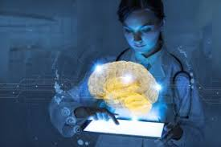
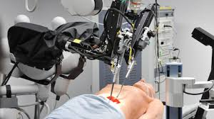

| الاسم | محمود محمد محمد السيد |
| جروب | 7 |
| سكشن | 39 |
بدأ تاريخ الذكاء الاصطناعي في العصور القديمة، من خلال الأساطير والقصص والشائعات عن الكائنات الاصطناعية الموهوبة بالذكاء أو الوعي من قبل الحرفيين المهرة. زُرعت بذور الذكاء الاصطناعي الحديث من قبل الفلاسفة الكلاسيكيين الذين حاولوا وصف عملية التفكير الإنساني بأنها عبارة عن التلاعب الميكانيكي للرموز. تُوج هذا العمل باختراع الكمبيوتر الرقمي القابل للبرمجة في الأربعينيات من القرن العشرين، وهي آلة تعتمد على جوهر التفكير المنطقي الرياضي. ألهم هذا الجهاز والأفكار التي تقف وراءه حفنة من العلماء للبدء بجدية في مناقشة إمكانية بناء الدماغ الإلكتروني. تأسس مجال أبحاث الذكاء الاصطناعى ضمن ورشة عمل في حرم كلية دارتموث خلال صيف عام 1956م. أولئك الذين حضروا سيصبحون قادة لأبحاث الذكاء الاصطناعى لعدة عقود. تنبأ العديد منهم بأن آلة بذكاء الإنسان لن تكون موجودة في أكثر من جيل، وأنهم حصلوا على ملايين الدولارات لجعل هذه الرؤية حقيقة.[1] في النهاية، أصبح من الواضح أنهم قللوا بشكل كبير من صعوبة المشروع. في عام 1973م، استجابةً لانتقادات جيمس لايتهيل والضغط المستمر من الكونغرس، أوقفت الحكومتان الأمريكية والبريطانية تمويل البحوث غير الموجهة في مجال الذكاء الاصطناعي، وستُعرف السنوات الصعبة التي تلت ذلك باسم «شتاء الذكاء الاصطناعي». بعد سبع سنوات، ألهمت المبادرة اليابانية التي تبنتها الحكومة اليابانية، الحكومات والصناعة لتزويد مشاريع الذكاء الاصطناعي بمليارات الدولارات، ولكن بحلول أواخر الثمانينيات أُصيب المستثمرون بخيبة أمل بسبب عدم وجود الطاقة اللازمة للكمبيوتر (الآلات) وسحبوا التمويل مرةً أخرى. ازدهر الاستثمار والاهتمام بالذكاء الاصطناعى في العقود الأولى من القرن الحادي والعشرين، عندما طُبقت عملية تعلم الآلة بنجاح على العديد من المشكلات في الأوساط الأكاديمية والصناعية بسبب الأساليب الجديدة، وطُبقت أجهزة الكمبيوتر القوية، وجُمعت مجموعات ضخمة من البيانات. التعلم العميق والبيانات الضخمة والذكاء العام المصطنع: منذ عام 2011 حتى الآن في العقود الأولى من القرن الحادي والعشرين، طُبق بنجاح الوصول إلى كميات كبيرة من البيانات (المعروفة باسم «البيانات الضخمة»)، وأجهزة الكمبيوتر الأرخص والأسرع، وتقنيات تعلم الآلة المتقدمة على العديد من المشاكل في جميع الأنظمة الاقتصادية. في الواقع، قدّر معهد ماكنزي العالمي في مقالته الشهيرة «البيانات الضخمة: الحدود التالية للابتكار والمنافسة والإنتاجية» أنه «بحلول عام 2009، كان لدى جميع القطاعات تقريبًا في الاقتصاد الأمريكي ما يعادل 200 تيرابايت على الأقل من معدل البيانات المخزنة». بحلول عام 2016، وصل سوق المنتجات والأجهزة والبرامج المرتبطة بـالذكاء الاصطناعي إلى أكثر من 8 مليارات دولار، وذكرت صحيفة نيويورك تايمز أن الاهتمام بـالذكاء الاصطناعي وصل إلى حد «الجنون». بدأت تطبيقات البيانات الضخمة في الوصول إلى مجالات أخرى أيضًا، مثل نماذج التدريب في علم البيئة وللتطبيقات المختلفة في الاقتصاد. أدى التقدم في التعلم العميق (وخاصةً الشبكات العصبونية الالتفافية العميقة والشبكات العصبونية المتكررة) إلى التقدم والبحث في معالجة الصور والفيديو، وتحليل النص، وحتى التعرف على الكلام. التعلم العميق التعلم العميق هو فرع من التعلم الآلي يصور نماذج تجريدية عالية المستوى في البيانات باستخدام رسم بياني عميق يحتوي على العديد من مستويات المعالجة. وفقًا لمبرهنة التقريب العام، فإن العمق ليس ضروريًا لتكون الشبكة العصبية قادرة على التقريب بين الوظائف العشوائية المستمرة. ومع ذلك، هناك العديد من المشكلات الشائعة للشبكات السطحية (مثل المطابقة) التي تساعد الشبكات العميقة على تجنبها. على هذا النحو، فإن الشبكات العصبونية العميقة قادرة على توليد نماذج أكثر تعقيدًا بشكل واقعي مقارنةً بنظيراتها السطحية.[6] ومع ذلك، فإن التعلم العميق لديه مشاكل خاصة به. هناك مشكلة شائعة في الشبكات العصبونية المتكررة هي مشكلة تلاشي معدل الانحدار، حيث يتقلص معدل الانحدار بين الطبقات تدريجيًا ويختفي حرفيًا حيث يُقرّب إلى الصفر. هناك العديد من الطرق التي طُورت للتعامل مع هذه المشكلة، مثل وحدات الذاكرة قصيرة المدى المطولة. يمكن أن تنافس بنى الشبكات العصبونية العميقة المتطورة في بعض الأحيان دقة الإنسان في مجالات مثل تصور الكمبيوتر، وتحديدًا في أمور مثل قاعدة بيانات إم إن آي إس تي والتعرف على إشارات المرور. يمكن لمحركات معالجة اللغة التي تعمل بمحركات البحث الذكية، التغلب بسهولة على البشر في الإجابة على الأسئلة السخيفة العامة (مثل نظام حاسوب آي بي إم واتسون)، وأحدثت التطورات الحديثة في التعليم العميق نتائج مذهلة في التنافس مع البشر، في أشياء مثل لعبة غو آند دوم (وهي لعبة أن يفوز أول شخص يطلق النار، التي أثارت بعض الجدل). البيانات الضخمة تشير البيانات الضخمة إلى مجموعة من البيانات التي لا يمكن التقاطها وإدارتها ومعالجتها بواسطة أدوات البرامج التقليدية في إطار زمني معين. إنها كمية هائلة من قدرات صنع القرار والبصيرة وتحسين العمليات التي تتطلب نماذج معالجة جديدة. في عصر البيانات الضخمة بيغ داتا إيرا الذي كتبه فيكتور ماير شونبيرغ وكينيث كوك، تعني البيانات الضخمة أنه بدلًا من التحليل العشوائي (باستخدام عينة مسح)، تُستخدم جميع البيانات للتحليل. خصائص البيانات الضخمة (5 فولت) (التي اقترحتها شركة آي بي إم): الحجم والسرعة والتنوع والقيمة والدقة. إن الأهمية الاستراتيجية لتكنولوجيا البيانات الضخمة لا تتمثل في إتقان معلومات البيانات الضخمة، ولكن تخصصها في هذه البيانات المهمة. بمعنى آخر، إذا شُبهت البيانات الضخمة بصناعة ما، فإن مفتاح تحقيق الربحية في هذه الصناعة هو زيادة «قدرة معالجة» البيانات وتحقيق «القيمة الإضافية» للبيانات من خلال «المعالجة». الذكاء العام الاصطناعي الذكاء الاصطناعي هو فرع من فروع علوم الكمبيوتر يحاول فهم جوهر الذكاء وإنتاج آلة ذكية جديدة تستجيب بطريقة مشابهة للذكاء البشري. تشمل الأبحاث في هذا المجال الروبوتات والتعرف على الكلام والتعرف على الصور ومعالجة اللغة الطبيعية وأنظمة الخبراء. منذ ولادة الذكاء الاصطناعي، أصبحت النظرية والتقنية أكثر نضجًا، وتوسعت مجالات التطبيق. من المُتوقع أن تكون المنتجات التكنولوجية التي جلبها الذكاء الاصطناعي في المستقبل عبارة عن «حاوية» للمعرفة الإنسانية. ويمكن للذكاء الاصطناعي أن يحاكي عملية المعلومات المتعلقة بالوعي والتفكير البشري. الذكاء الاصطناعي ليس ذكاءً بشريًا، لكنه يمكن أن يكون مشابه للتفكير البشري، ويمكن أن يتجاوز الذكاء البشري. يُشار أيضًا إلى الذكاء العام الاصطناعي باسم «الذكاء الاصطناعي القوي»، أو «الذكاء الاصطناعي الكامل» أو كقدرة الآلة على تنفيذ «الأداء الذكي العام». تحتفظ المصادر الأكاديمية على «الذكاء الاصطناعى القوي» للإشارة إلى الآلات القادرة على الشعور بالوعي
مصطلح «الذكاء الاصطناعي» ليس بالمصطلح الجديد وقد تم التعريف به من الخمسينات من قبل عالم الحاسوب جون مكارثي «1956»، لكننا تعودنا أن نشاهد تطبيقات «الذكاء الاصطناعي» في أفلام الخيال العلمي. في الآونة الأخيرة أصبح «الذكاء الاصطناعي» حقيقة لا خيالاً، فقد تطورت هذه التكنولوجيا بشكل كبير على أرض الواقع حتى أصبحت أداة رئيسة تدخل في مختلف القطاعات منها الصناعية والأمنية والتعليمية، الخ... ويجمع الخبراء على أهمية «الذكاء الاصطناعي» في التعليم في القرن الواحد والعشرين. فبشكل مختصر «الذكاء الاصطناعي» هو سلوك وخصائص معينة تتسم بها البرامج الحاسوبية تجعلها تحاكي القدرات الذهنية البشرية وأنماط عملها. من أهم هذه الخاصيات القدرة على التعلم والاستنتاج وردة الفعل. فالجدير بالذكر هنا أن برامج «الذكاء الاصطناعي» تختلف عن برمجة أنظمة المعلومات الأخرى بأنها تمتلك القدرة على الاستنتاج بنفسها وتدرك ما يجب أن تفعله وما لا يجب أن تفعله وليس كسابقتها من الأنظمة باتباع خطوات مبرمجة مسبقاً. ورأيي الشخصي أن استخدام هذا النوع من البرامج والآليات الذكية لن يحل محل البشر أو المعلم على وجه الخصوص بل إنه سيعزز القدرات والمساهمات البشرية في النظام التعليمي بشكل كبير. مساهمة «الذكاء الاصطناعي» كبيرة في مجال التعليم فتعتبر المؤسسات التعليمية مصدراً كبيراً للبيانات حيث يمكن عمل أنظمة قادرة على إدارة بيانات المؤسسات التعليمية والطلاب في آن واحد وحفظها على شكل قواعد بيانات ضخمة. هذه البيانات الضخمة يمكن استخدامها في تدريب شبكات عصبية ضخمة تستطيع تنبؤ الضعف على المستوى الفردي للطالب والنقص في الموارد المادية والبشرية على مستوى المدارس والجامعات قبل حدوثه. يعتمد «الذكاء الاصطناعي» على البيانات ولذلك ستساعد مثل هذه الأنظمة المؤسسات التعليمية من ناحية تقليل تكاليفها وبزيادة جودة مخرجاتها التعليمية. فمن أمثلة ذلك التدريس الآلي والنظام الآلي لتقييم ورقة الإجابات. فباستخدام تقنية «الذكاء الاصطناعي» باستطاعتنا توجيه الأسئلة استناداً إلى نقاط ضعف المتعلم كما سيمكن من دراسة سلوك المتعلمين والعمل على مساعدتهم واحترام القدرات المختلقة والمتفاوتة للمتعلمين. فقد أثبتت بعض الدراسات أن بعض الطلاب يميلون إلى اللجوء إلى الأنظمة المعلوماتية أكثر من المدرس لطرح الأسئلة وهذا يرجع إلى حقيقة أنهم يخجلون من طرح الأسئلة أمام باقي الطلبة أو إزعاج المدرس لكي لايؤثر سلباً على تقييمهم مستقبلاً. إنني أتفق مع الكثير من الباحثين بأن دور المعلم سيكون حاضراً دائماً فلا يمكن التنازل عن التفاعل الإنساني والاتصال البشري الذي تفتقده الآليات. ولكن وجود «الذكاء الاصطناعي» سيوفر أدوات تمكن المعلمين من أداء رسالتهم بفاعلية أكبر وجهد أقل لأنه سيؤمن جميع المعلومات التي سيحتاجها المعلم لتقييم أدائه وأداء طلابه وتحسينهما بسرعة وفعالية. من تطبيقات «الذكاء الاصطناعي» هو تقنية الواقع الافتراضي والواقع المعزز. فأولاً الواقع الافتراضي هو عبارة عن محاكاة تفاعلية تتيح للمتعلم فرصة خوض تجارب مختلفة كالمشاركة في زيارة أماكن معينة وهو جالس في بيئة مختلفة كالمنزل أو الصف. يمكن للمتعلم أن يكون جزءاً من هذه التجربة كما يمكنه التنقل داخلها والتفاعل أيضاً من خلال أجهزة خاصة تساعده في الاندماج بشكل كلي وهي في الغالب عبارة عن نظارات للواقع الافتراضي أو وحدات تحكم مع استشعار للحركة. تساعد هذه التقنية المتعلم على تنمية قدراته من خلال القيام بجولات افتراضية مثلاً في أماكن تاريخية في دول أخرى. وثانياً تقنية الواقع المعزز فهي تختلف عن سابقتها في كونها تنقل المشاهد بعرض ثنائي أو ثلاثي الأبعاد في محيط المتعلم حيث يتم دمج هذه المشاهد أمامه لخلق واقع عرض مركب. وتتيح هذه التقنية أيضا مجموعة من الخيارات التعليمية كمحاكاة عمليات معقدة كالعمليات الجراحية أو القيام بتشريح جسم الإنسان بالنسبة لطلبة الطب.
يمكن للأدوات المدعمة بالذكاء الاصطناعي تحديد العلاقات ذات المغزى في البيانات الأولية وهي تنطوي على امكانية التطبيق في كل مجال من مجالات الطب تقريبا، بما في ذلك تطوير الأدوية وقرارات العلاج ورعاية المرضى والقرارات المالية والتشغيلية. باستخدام الذكاء الاصطناعي، يمكن لمتخصصي الرعاية الصحية معالجة المشكلات المعقدة التي يصعب معالجتها بمفردهم أو التي تتطلب الكثير من الوقت. ويمكن أن يكون الذكاء الاصطناعي موردا قيما للمتخصصين الطبيين، مما يسمح لهم باستخدام خبراتهم بشكل أفضل وتقديم قيمة عبر النظام البيئي الصحي.
 